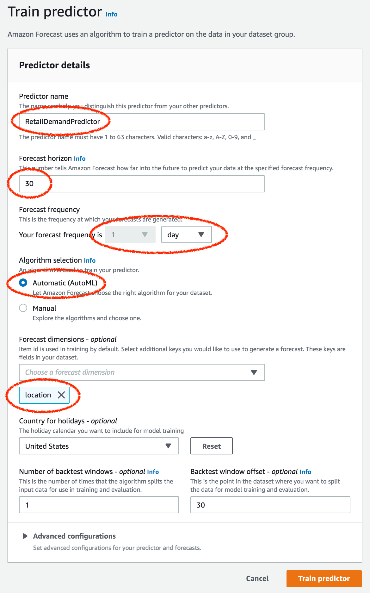
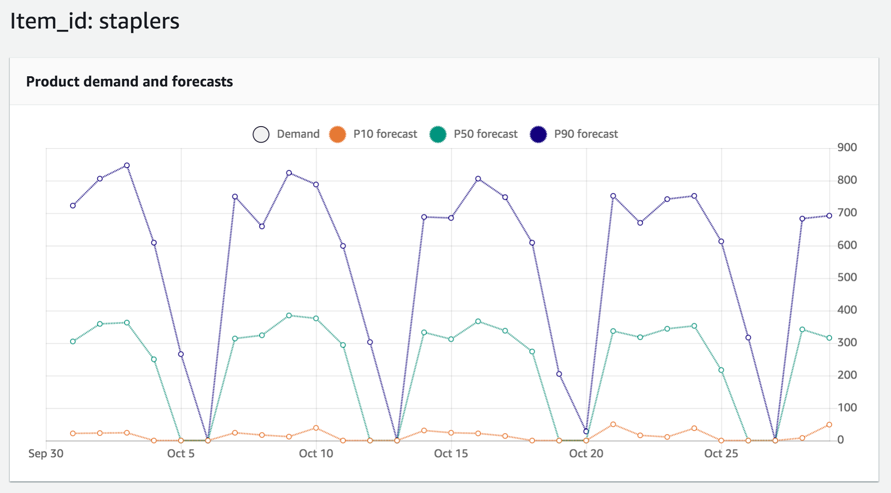

Lab 3 – Forecasting
In this lab, we use the retail analytics that we gathered and aggregated to forecast future sales. The simulated data set is aggregated hourly and included in the file retail_analytics.csv and looks something like below.
Sample Data
| Time |
Item |
Quantity |
StoreLocation |
| 2019-07-01 09:00:00 |
staplers |
38 |
San Francisco |
| 2019-07-01 10:00:00 |
post-its |
30 |
New York |
| … |
… |
… |
… |
| 2019-07-01 14:00:00 |
markers |
29 |
Los Angeles |
Forecast
As of this writing, Amazon Forecast is supported in 6 regions. Feel free to choose a region of your choice, but please do ensure that you always remain within your chosen region, since you won’t be able to see the models and predictors you created in one region from another region.
| Region Name |
Region |
| US East (Ohio) |
us-east-2 |
| US East (N. Virginia) |
us-east-1 |
| US West (Oregon) |
us-west-2 |
| Asia Pacific (Singapore) |
ap-southeast-1 |
| Asia Pacific (Tokyo) |
ap-northeast-1 |
| EU (Ireland) |
eu-west-1 |
For the purposes of this lab, we’re using US West (Oregon). This is shown as Oregon
in the top right-hand corner of the AWS console and is referred to as us-west-2 via CLI or API.
Console / GUI
Step A
Point your browser to https://console.aws.amazon.com/forecast. On the top right-hand corner of the console, note the region you’re in. This will typically look like this:

We’ll first give this dataset group a name. Against ‘Dataset group name’ enter something descriptive.
For ‘Forecasting domain’, choose ‘Retail’.
Click ‘Next’.
Step B
Now we’ll create and define the schema the dataset that we’ll base forecasts on. The RETAIL domain supports 3 dataset types, TARGET_TIME_SERIES, RELATED_TIME_SERIES, and ITEM_METADATA
Enter a name for the dataset against ‘Dataset Name’. For example JulyToSeptemberSales.
For ‘Frequency of your data’ dropdowns, leave the first at ‘1’ and choose ‘hour’ for the second.
For ‘Data schema’, enter the below:
{
"Attributes": [
{
"AttributeName": "timestamp",
"AttributeType": "timestamp"
},
{
"AttributeName": "item_id",
"AttributeType": "string"
},
{
"AttributeName": "demand",
"AttributeType": "float"
},
{
"AttributeName": "location",
"AttributeType": "string"
}
]
}
This schema needs to match the schema of the dataset generated by the gen_aggregate_pos_data.rb script in retail_analytics.csv.
Now click ‘Next’.

Step C
We will now import data target timeseries dataset that we just defined
Before we import the target timeseries dataset, we’ll need to upload the retail_analytics.csv to an Amazon S3 bucket that Amazon Forecast can access and get the dataset from.
From the command line run the below after replacing BUCKET_NAME with the name of your S3 bucket:
aws s3 mb s3://[BUCKET_NAME]
aws s3 cp retail_analytics.csv s3://[BUCKET_NAME]/
| TODO: For a new account, user may not have permissions to create S3 buckets. Fix |
Switch back to the AWS console to pick up where we left off. The console should now be in the ‘Import target time series dataset’ screen.

Enter a descriptive name for ‘Dataset import name’.
Leave the ‘Timestamp format’ exactly as-is.
Choose ‘IAM Role’
| TODO: User may need to create IAM Role. Check and fix. |
For ‘Data location’ copy and paste the S3 bucket name that you created earlier like so: s3://[BUCKET_NAME]/retail_analytics.csv
Click on ‘Start Import’. If all is successful, you should see a flash message like so:
Step D
We’ll now train a Predictor on this dataset that we just imported.
Click on ‘Start’ under ‘Train a predictor’ (in the middle column)

Enter something descriptive for ‘Predictor name’

For ‘Forecast horizon’ enter 30 days (we’ll attempt to predict demand over the next 30 days)
For ‘Forecast frequency’ enter ‘1’ in the first drop down and ‘day’ in the second. Our forecast frequency will be daily.
For ‘Algorithm selection, choose the 'Automatic’ option. Amazon Forecast will make the best decision and choose among the available forecasting algorithms.
Click on ‘Train Predictor’. If all succeeds, you will see a screen that shows training is in progress

This training step can take a while, at least 20 - 30mins. We’ll jump to Lab 1 and pick this up when done.
Step E
Once the predictor is trained, we’ll generate forecasts.
Click on ‘Start’ under ‘Generate forecasts’

Enter a descriptive name against ‘Forecast name’
For the ‘Predictor’ drop-down, choose the predictor that we just trained in the previous step.
Click on ‘Create a Forecast’

If successful, there should be a flash message like below.

This step also takes around 10mins, but is shorter than than training a predictor. Let’s jump to Lab 2 and pick this up then.
Step F
After the forecast generation is complete, we can look up lookup forecasts for specific items. Click on ‘Lookup Forecast’
In the ‘Forecast lookup’ screen, enter a name for the ‘Forecast’
We’ll do our 30 day forecast from Sep 29 thru Oct 29. So, for the ‘Start date’, enter 2019/09/29 as the date and 09:00:00 as time
For the ‘End date’, enter 2019/10/29 as the date and 17:00:00 as the time.
For ‘Forecast key’, item_id should have already been chosen by default (required by default, since this is what we’re forecasting)
For ‘Value’, enter ‘staplers’
Click on ‘Get Forecast’

You should subsequently see a graph with P90, P50, and P10 forecasts like so

Running the Code (OPTIONAL)
While you can directly use the pre-generated retail_analytics.csv file to generate forecasts, you can also modify the retail_pos_simulator.rb script that generates this file and modify it to generate a new retail_analytics.csv file to see differences in forecast based on changes you made.
To run this code:
cd into the 3_forecast directory
install bundler (which is used to install ruby dependencies)
then install dependencies
and run the script like so…
$ ruby retail_pos_simulator.rb